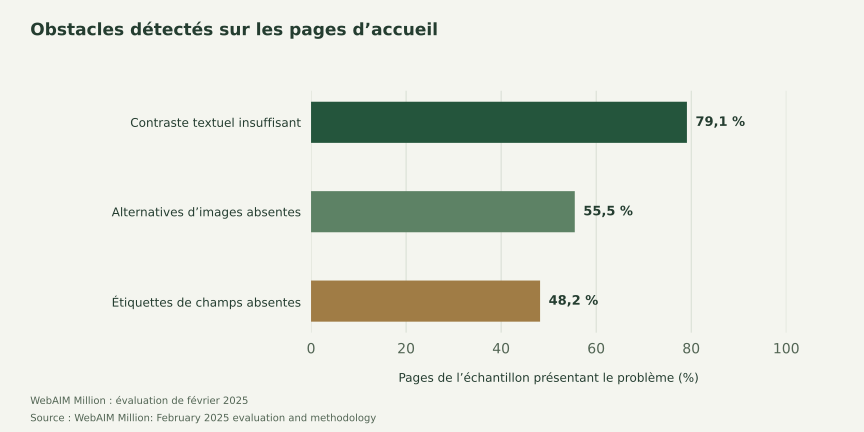

Un client arrive sur votre site, trouve le service et commence le formulaire. Puis le focus clavier disparaît, un message d’erreur n’explique pas le problème ou une petite étiquette devient illisible à fort agrandissement. L’entreprise peut compter cette visite comme un abandon ordinaire. Pour la personne, le parcours contient un obstacle qu’il serait possible de retirer.
L’accessibilité web concerne la capacité de personnes aux aptitudes et modes d’interaction différents à percevoir, comprendre, parcourir et utiliser un service. Elle touche la conception, le contenu, le code et la publication quotidienne. Un site plus inclusif exige de suivre la tâche entière, de la recherche d’information à sa confirmation.
Ce guide examine les tests pratiques, les obstacles WCAG courants, les formulaires, la navigation, les médias et leur maintenance. Il s’appuie sur les recommandations du W3C et les travaux de WebAIM, avec des priorités de mise en œuvre issues de notre analyse. Il ne constitue ni un avis juridique ni une déclaration de conformité d’un site particulier.
Le rapport WebAIM Million de 2025 analyse un million de pages d’accueil avec le moteur WAVE sur leur contenu rendu. Il relève des échecs WCAG détectables sur 94,8 % des pages. Un contraste textuel insuffisant apparaît sur 79,1 %, des alternatives d’images manquantes sur 55,5 % et des champs sans étiquette sur 48,2 %.

WebAIM Million : évaluation de février 2025. Évaluation automatique WAVE d’un million de pages issues du classement Tranco. Les catégories se recouvrent : elles ne totalisent pas 100 %. Ces contrôles ne couvrent qu’une partie de l’accessibilité ; l’absence d’erreur détectée ne prouve pas la conformité. Consulter la source et sa méthodologie.
| Groupe ou objectif | Valeur |
|---|---|
| Contraste textuel insuffisant | 79,1 % |
| Alternatives d’images absentes | 55,5 % |
| Étiquettes de champs absentes | 48,2 % |
L’échantillon provient du classement Tranco et concerne février 2025. Ces pourcentages décrivent des pages présentant chaque problème, pas des utilisateurs ni l’ensemble du Web. Une page peut cumuler plusieurs catégories. L’automatisation ne couvre qu’une partie de l’accessibilité : aucune erreur détectée ne prouve pas une conformité complète.
L’enseignement utile concerne le point de départ. Contraste, description des images et étiquettes méritent une vérification, mais la priorité doit également refléter les tâches essentielles. Un blocage dans l’unique formulaire de réservation peut avoir plus de conséquences pour le visiteur que plusieurs problèmes moins importants ailleurs.
Choisissez une tâche importante : réserver une consultation, demander un devis, trouver les horaires, acheter ou télécharger une facture. Suivez toutes ses étapes, y compris fenêtres, erreurs, confirmations et courriels. Les obstacles apparaissent souvent entre les pages ou après une action, et restent invisibles sur une capture statique.
Identifiez les différentes façons de réaliser cette tâche. La personne peut utiliser clavier, lecteur d’écran, agrandissement, petit écran, commande vocale ou plusieurs moyens combinés. Un seul outil ne représente pas l’expérience de toutes les personnes en situation de handicap.
Décrivez concrètement l’obstacle. Au lieu d’affirmer que le formulaire est inaccessible, indiquez que le focus passe derrière une fenêtre ouverte ou que le champ téléphone obligatoire ne possède pas d’étiquette associée. Ajoutez le comportement attendu, le comportement observé et les informations nécessaires pour reproduire le défaut.
Cette méthode facilite la priorité. Le responsable produit comprend qu’une demande ne peut pas aboutir, tandis que le développeur reçoit un comportement précis à corriger. Un score numérique aide parfois à suivre certains contrôles automatiques ; il doit rester relié à ce que les personnes réussissent effectivement à faire.
Les éléments HTML portent un sens et un comportement attendu. Un bouton déclenche une action, un lien conduit à une destination, un titre organise le contenu. Leur utilisation correcte donne au navigateur et aux technologies d’assistance une meilleure base pour présenter l’interface.
Une présentation visuelle sur mesure n’exige pas d’abandonner les propriétés sémantiques des éléments. Un lien peut prendre l’apparence d’un appel à l’action très visible tout en restant un lien vers une destination. Un bouton peut respecter les couleurs et formes de la marque tout en conservant son comportement attendu au clavier. Les difficultés commencent souvent lorsqu’un élément générique imite un contrôle sans gérer correctement son nom, son rôle, son état et les interactions nécessaires.
Examinez les titres comme le plan du document. Donnez à la page un titre principal clair et utilisez les intertitres pour les véritables sections. Ne choisissez pas leur niveau uniquement selon la taille de police par défaut. Adaptez le style en préservant une structure utile.
Identifiez aussi navigation, contenu principal et pied de page. Un lien d’évitement permet de dépasser les éléments répétés au clavier. L’objectif est une exploration efficace, sans obliger la personne à écouter ou traverser chaque menu avant d’atteindre l’objet de sa visite.
L’explication du W3C sur le clavier décrit l’accès aux fonctionnalités par une interface clavier, avec une exception limitée pour les fonctions dépendant d’une trajectoire de mouvement. Sur un site d’entreprise ordinaire, menus, formulaires, fenêtres et contrôles méritent une attention particulière.
Parcourez la page depuis le début. Les contrôles utiles apparaissent-ils dans un ordre logique ? Le focus se voit-il ? Pouvez-vous activer un élément et continuer ? Ne retirez pas l’indicateur visible sans lui donner un remplacement clairement identifiable.
Les fenêtres demandent une gestion volontaire du focus. À l’ouverture, la personne doit pouvoir travailler dans la fenêtre et la fermer correctement. À la fermeture, le focus doit revenir à un endroit cohérent. Une superposition visuelle qui laisse le clavier parcourir des éléments cachés crée une expérience confuse.
Vérifiez aussi les en-têtes fixes et commandes flottantes. Un lien peut recevoir le focus tout en restant masqué. Testez après défilement et à fort agrandissement, pas seulement en haut d’un grand écran. La prévisibilité aide les utilisateurs du clavier et facilite le raisonnement des personnes qui maintiennent l’interface.
Les tutoriels de formulaires du W3C expliquent étiquettes, regroupements, instructions et retours. Un formulaire doit indiquer quoi saisir et aider à corriger les erreurs. Un texte temporaire dans le champ ne remplace pas correctement une étiquette persistante associée au contrôle.
Expliquez les informations obligatoires avant l’envoi. Placez les consignes de format inhabituel près du champ concerné. Évitez de demander des informations inutiles, surtout si elles ajoutent de l’effort ou des préoccupations de confidentialité. Un formulaire court aide seulement si ses champs restants et leurs instructions restent compréhensibles.
Lorsque la validation échoue, conservez le travail lorsque cela est approprié. Identifiez les champs concernés et expliquez comment les corriger. Une bannière rouge disant simplement « saisie invalide » oblige la personne à chercher. Reliez les messages aux contrôles et envisagez un résumé d’erreurs pour les formulaires longs.
La réussite de l’envoi fait pleinement partie du parcours à concevoir et à vérifier. Donnez une confirmation explicite et expliquez ce qui se passera ensuite. Si le service transmet un courriel, son contenu doit lui aussi rester lisible et utile pour poursuivre la démarche. Le client ne devrait pas avoir à déduire la réussite de la disparition d’une animation ou d’un bouton devenu inactif sans aucune explication.
Les critères WCAG de contraste fixent au niveau AA un rapport minimal de 4,5:1 pour le texte ordinaire et de 3:1 pour le texte répondant à la définition de grande taille, avec des exceptions précisées. La relation texte-fond compte davantage que l’élégance apparente d’une couleur dans une présentation.
Testez les combinaisons réelles : étiquettes atténuées, liens, aides, texte sur photographie et états des boutons. Une palette peut proposer des paires adaptées tandis qu’un composant choisit une combinaison insuffisante. Les images et dégradés peuvent modifier le contraste à plusieurs endroits d’une même ligne.
N’utilisez pas seulement la couleur pour transmettre un sens. Une sélection, une erreur ou un état peut aussi comporter un mot, une icône, un motif ou une position. Rendez cet indice compréhensible dans son contexte. Une icône inexpliquée crée une autre ambiguïté même lorsqu’elle règle le problème de couleur.
Examinez les textes secondaires. Réduire le contraste construit parfois une hiérarchie, mais les conditions de facturation et aides de saisie doivent rester lisibles. Espacement, taille, graisse et regroupement organisent aussi la page. L’accessibilité peut donc améliorer le système visuel sans imposer une apparence identique à tous les éléments.
L’alternative dépend de ce que l’image apporte. Une photographie purement décorative peut nécessiter une alternative vide. Un schéma de processus exige une explication équivalente. Une image servant de lien doit fournir un nom accessible utile pour l’action ou la destination.
Rédigez selon la tâche environnante. Une photo de produit peut distinguer une variante. Une capture de réalisation peut identifier l’interface montrée. Répéter « image de » ajoute rarement du sens, et recopier un nom de fichier n’apporte généralement aucune aide.
Les graphiques nécessitent davantage qu’une description de leur apparence. Expliquez la comparaison, les valeurs, la source et les limites dans un texte accessible. Un tableau voisin permet de consulter les chiffres sans dépendre des couleurs ou des axes. Les graphiques de cette série suivent ce principe.
N’utilisez pas les alternatives pour stocker des mots-clés. Leur rôle est de transmettre l’information ou la fonction utile de l’image. Un terme pertinent peut s’y trouver naturellement ; une liste d’expressions sans rapport complique la lecture avec une technologie d’assistance et dégrade la qualité éditoriale.
Un média explique parfois un produit ou installe une ambiance, mais peut aussi créer des obstacles. Identifiez son information et la manière d’y accéder sans dépendre uniquement de l’audition ou de la vision. Prévoyez sous-titres, transcription et alternatives selon le contenu et les exigences applicables.
Évitez les sons inattendus et mouvements permanents imposés pendant une tâche. Proposez des commandes compréhensibles lorsqu’elles sont nécessaires. Un fond décoratif ne doit pas concurrencer le formulaire ou la navigation. Testez les préférences de réduction du mouvement et gardez les informations essentielles disponibles.
Une animation devrait expliquer un changement d’état ou une relation. Une transition courte peut montrer l’ouverture d’un panneau. Une longue séquence qui retarde l’accès peut gêner. Demandez ce que le mouvement explique et si la page reste fonctionnelle lorsqu’il change ou s’arrête.
Pour un carrousel, examinez commandes, noms, clavier, temporisation et ordre de lecture. Un défilement fluide à la souris peut devenir confus si les diapositives changent pendant la lecture. Envisagez une présentation plus simple lorsque la comparaison y gagne. Le choix doit suivre le contenu et le public, sans chercher à animer chaque section.
Un site séduisant sur une capture mobile peut rester difficile à fort zoom. Testez agrandissement, largeur réduite, longs libellés et variations de contenu. Les commandes doivent rester accessibles et les informations ne doivent pas disparaître simplement parce que l’espace se réduit.
Surveillez les largeurs et hauteurs fixes dans les composants. Une carte qui contient correctement un titre court peut couper un libellé plus long. Une fenêtre conçue uniquement pour un grand écran peut placer sa commande de fermeture en dehors de la zone accessible. Laissez le contenu déterminer l’espace dont il a besoin, puis utilisez volontairement les contraintes responsive pour organiser la présentation sans faire disparaître l’information.
Les tableaux exigent une attention particulière. Certaines comparaisons nécessitent de la largeur, mais le reste de la page ne doit pas hériter d’un défilement horizontal inutile. Lorsque pertinent, fournissez une région défilante nommée, préservez les en-têtes et vérifiez son accès au clavier. La compréhension doit dépasser la seule présentation visuelle.
Testez les largeurs intermédiaires où le menu change de comportement. Logo, liens et bouton commercial peuvent se chevaucher avant le déclenchement du mode mobile. La vérification doit couvrir ces seuils, au-delà du plus grand ordinateur et du plus petit téléphone. C’est une condition pratique d’utilisation dans les situations réelles.
Les outils automatiques repèrent rapidement certains labels manquants, contrastes et problèmes de structure. Ils aident le développement et la non-régression. Ils ne jugent pas chaque description d’image, interaction, ordre de lecture ou parcours client complet.
Les premières vérifications d’accessibilité du W3C offrent un point de départ pratique, en précisant qu’elles ne remplacent pas une évaluation approfondie. Utilisez-les pour une base répétable et pour identifier les sujets à examiner plus loin.
Ajoutez des contrôles manuels : clavier, focus, zoom, erreurs et technologies d’assistance pertinentes avec une personne qui sait les utiliser. Lorsque possible, impliquez des personnes concernées par les usages et rémunérez correctement leur contribution à l’évaluation.
Documentez le périmètre : modèles, tâches, outils et configurations examinés. Un rapport portant sur cinq pages ne doit pas devenir une affirmation sans preuve sur toute une application. La précision rend les résultats plus utiles et fournit à la prochaine revue un point de départ honnête.
Commencez par les obstacles qui empêchent les tâches essentielles, puis examinez les composants partagés. Corriger le menu, les champs ou la fenêtre peut améliorer de nombreuses pages. Un défaut commun mérite une correction commune plutôt que des réparations locales répétées qui finissent par diverger.
Donnez à chaque problème un responsable, une reproduction et une condition d’acceptation. Par exemple, la personne ouvre le menu au clavier, atteint les liens, referme le panneau et poursuit depuis le déclencheur. Ce comportement observable se vérifie après la modification.
Coordonnez rédaction et développement. Le code peut associer correctement une alternative tandis qu’un rédacteur doit encore expliquer le sens de l’image. Le design peut corriger le contraste pendant que l’intégration conserve ces couleurs dans chaque état. Plusieurs métiers interviennent : le planning doit rendre leurs transmissions explicites.
Après une correction, vérifiez le contexte. Un bouton correctement construit peut garder un libellé ambigu. Un formulaire techniquement solide peut poser une question impossible. Le système de composants et l’examen du parcours se complètent : l’un améliore la cohérence, l’autre vérifie l’utilité réelle de l’expérience.
Un site évolue : articles, images, scripts marketing, formulaires, fenêtres et tableaux apparaissent. Sans organisation éditoriale et technique, des obstacles peuvent revenir après une revue initiale attentive. L’accessibilité ne s’arrête donc pas à la mise en ligne.
Préparez une courte liste pour titres, ancres de liens, alternatives, sous-titres et documents téléchargeables. Donnez aux rédacteurs des exemples issus de leur propre site. Un repère concret se consulte plus facilement qu’une longue norme sans rapport visible avec leur travail.
Côté développement, intégrez les interactions critiques à la revue des composants et à la réception des livraisons. Préservez focus et sémantique pendant les refontes. Testez les changements utiles du menu, paiement, réservation et connexion avant de les publier.
Gardez un canal de retour utilisable. Une personne qui rencontre un problème doit pouvoir joindre l’organisation et obtenir une réponse utile. Enregistrez le défaut et suivez-le comme les autres améliorations produit. La démarche devient durable lorsque l’entreprise l’intègre à la qualité du service plutôt qu’à un badge ponctuel.
Transformez un objectif général en comportement observable. Pour un devis en plusieurs étapes, chaque champ doit posséder une étiquette utile, les instructions doivent précéder leur usage, les erreurs doivent nommer le problème et le clavier doit permettre la progression. Prévoyez aussi le retour à une étape précédente.
Décrivez les changements d’état. Au début de l’envoi, donnez un retour compréhensible. Après un échec, conservez les informations lorsque pertinent et expliquez la suite. Après la réussite, la confirmation doit apporter la référence ou le suivi dont le client a besoin.
Définissez explicitement les limites et états de l’interaction. Une fenêtre doit posséder un chemin d’ouverture et de fermeture cohérent avec le reste du parcours. Un panneau dépliant doit communiquer si son contenu est actuellement ouvert ou fermé. Une commande de navigation ne doit pas créer de piège clavier. Ces exigences donnent aux personnes chargées du design et du développement une cible commune avant le début des raffinements visuels.
Indiquez ensuite la vérification : inspection automatique lorsqu’elle aide, parcours manuel aux largeurs représentatives et tests appropriés de technologies d’assistance. Conservez conditions et limites connues dans le compte rendu. Les contrôles doivent correspondre au comportement promis.
Cette approche fait entrer l’accessibilité dans le fonctionnement normal des livraisons. Elle aide un client à évaluer un lot ou un jalon et donne au développeur une définition concrète du travail terminé. Les critères peuvent ensuite grandir avec le produit. Ils doivent toutefois continuer à décrire des tâches reconnues par les utilisateurs, plutôt que devenir une collection de termes techniques dont personne ne comprend l’effet sur la démarche réelle.
Un site peut présenter une interface claire puis diriger le client vers un PDF, tableau ou diaporama difficile. Examinez l’information de ces documents et leur nécessité. Parfois, une explication HTML bien structurée offre une lecture plus adaptable qu’un téléchargement seul.
Pour les documents qui restent nécessaires, examinez leur structure, leur ordre de lecture, leurs titres, liens, tableaux et alternatives d’images utiles. Employez les outils et les compétences adaptés au format concerné, plutôt que de supposer qu’une inspection visuelle suffit. Une mise en page séduisante ne démontre pas que le document conserve son sens et sa navigation lorsqu’une personne le consulte avec une technologie d’assistance.
Annoncez le téléchargement avant son ouverture. Choisissez une ancre descriptive et un contexte utile : fonction et format. Évitez une succession de liens tous intitulés « télécharger » lorsqu’ils concernent des tâches différentes. Le texte voisin doit aider à choisir le bon document.
Intégrez leur mise à jour à la publication. Une nouvelle grille tarifaire ou demande administrative mérite la même attention qu’une page. Identifiez le responsable et retirez les anciennes versions des parcours principaux afin d’éviter qu’un client remplisse le mauvais document.
Lorsqu’une alternative existe, rendez-la utilisable et visible. Une personne bloquée doit savoir comment obtenir l’information ou accomplir la démarche. Ce chemin ne remplace pas la correction, mais aide l’entreprise à répondre pendant que le problème de fond reçoit l’attention nécessaire.
Un outil peut aider sur certains contrôles ou fonctions. Il ne démontre pas automatiquement que toutes les interactions, documents et informations conviennent aux utilisateurs concernés. Examinez ses changements réels et continuez l’évaluation du site lui-même.
Oui. Typographie, hiérarchie, commandes prévisibles et interactions soignées peuvent renforcer apparence et usage. Il faut choisir volontairement puis tester les tâches, plutôt que traiter qualité visuelle et accessibilité comme deux projets indépendants.
Le menu et la tâche client principale, avec erreurs et confirmation, forment un bon départ. Ajoutez contraste, étiquettes, images, zoom et clavier. Les résultats permettent de définir une évaluation plus large et un plan d’amélioration priorisé.
L’accessibilité transforme une intention générale en changements précis : étiquette lisible, commande atteignable, erreur compréhensible et démarche réalisable. Ces améliorations soutiennent le service de l’entreprise et donnent une base plus claire aux évolutions futures du design et du développement.
Deux Rives Web conçoit et améliore interfaces, sites et applications autour des tâches réelles. Découvrez nos services de conception web, consultez le guide de performance, ou décrivez le parcours à rendre accessible. Nous pourrons identifier les obstacles importants, définir les corrections et vérifier leur résultat dans une démarche maintenable par l’équipe.